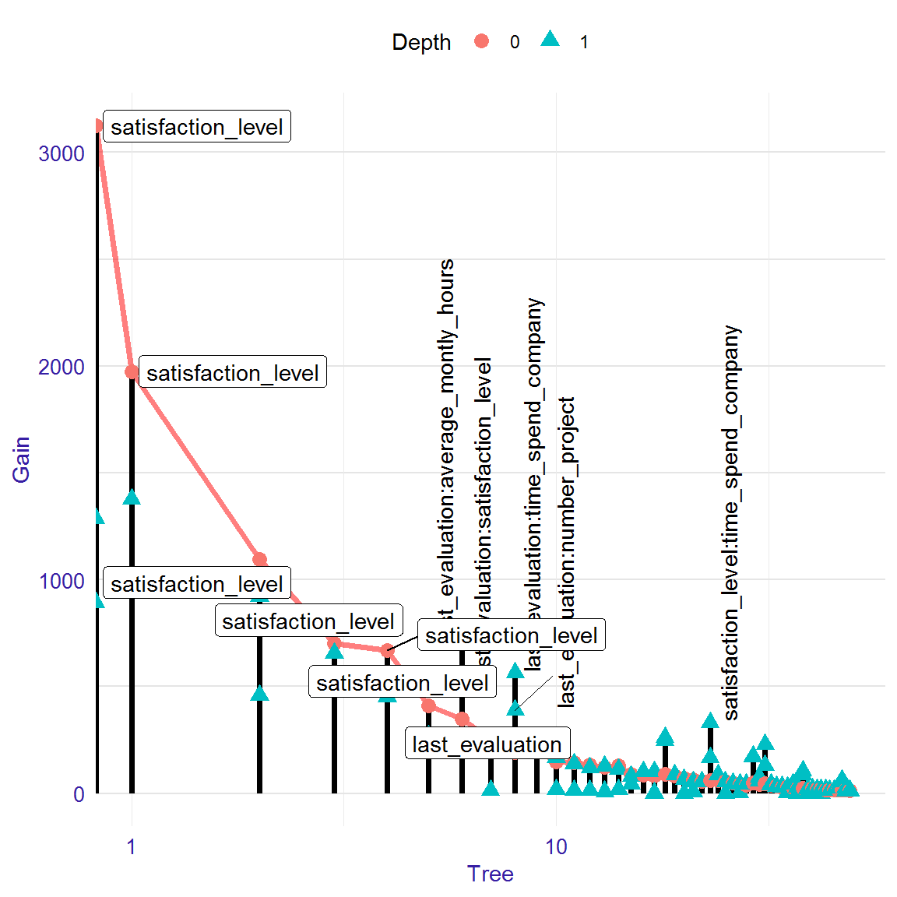
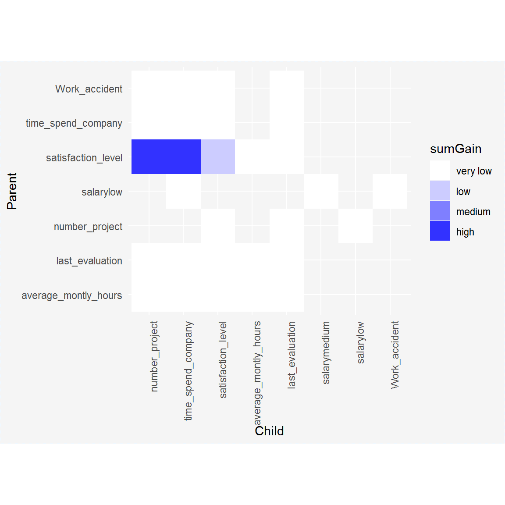
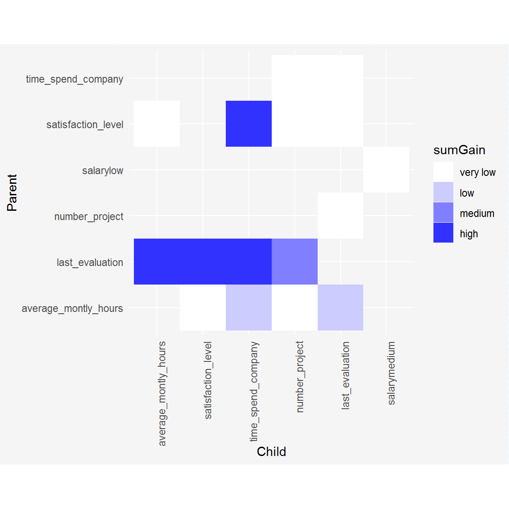
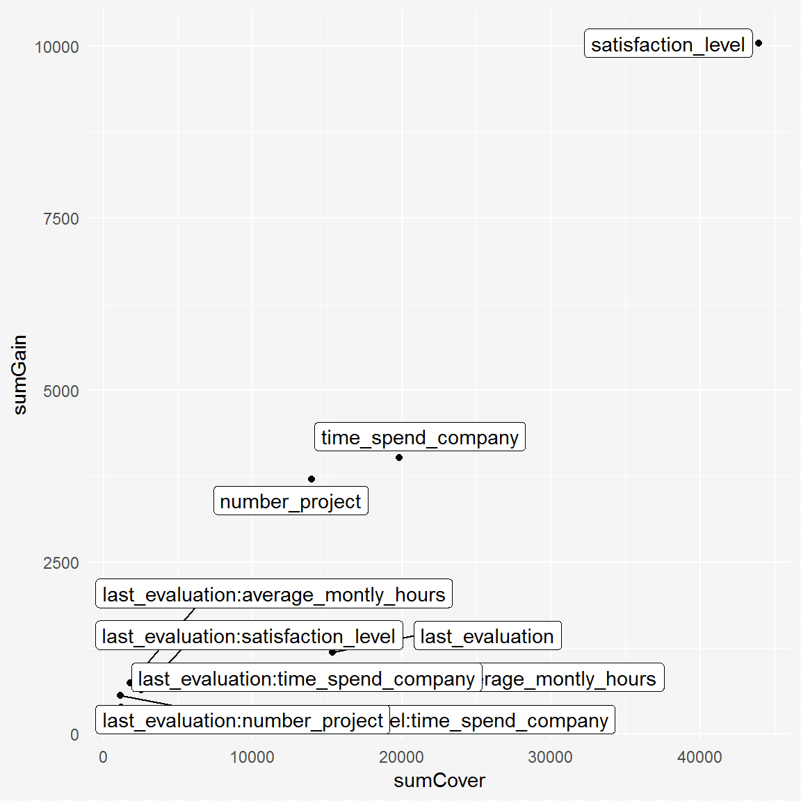
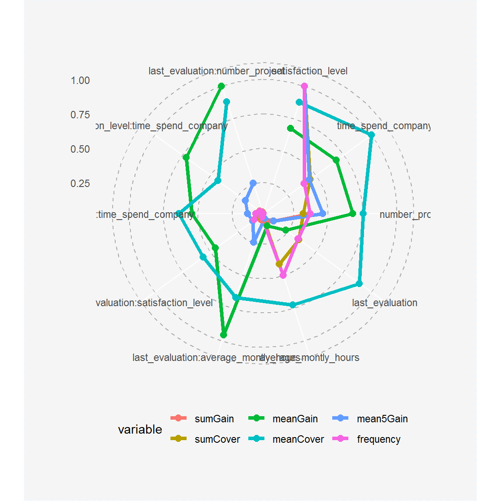
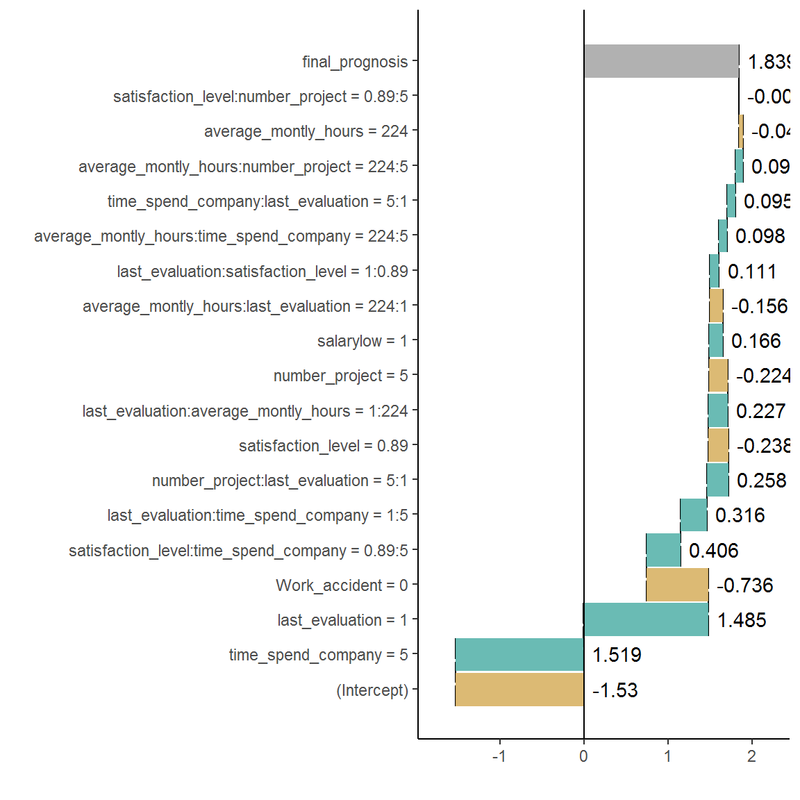

EIX: Explain Interactions in XGBoost
Ewelina Karbowiak
2018-12-07
Source:../vignettes/EIX.Rmd
EIX.RmdPackage EIX is the set of tools to explore the structure of XGBoost and lightGBM models. It includes functions finding strong interactions and also checking importance of single variables and interactions by usage different measures. EIX consists several functions to visualize results.
Almost all EIX functions require only two parameters: a XGBoost or LightGBM model and data table used as training dataset. The exceptions are the waterfall function and its plot. The first one requires parameters: a XGBoost model and observation, which prediction has to be explained). These two functions support only XGBoost models. All plots are created with package ggplot2. Most of them use plot theme theme_mi2 from DALEX.
Data Info
This vignette shows usage of EIX package. It lets to explain XGBoost prediction model concerning departures of employees from company using HR_data. Dataset was taken from kaggle and consists 14999 observations and 10 variables. The dataset is also available in package EIX and there it is described more precisely.
#devtools :: install_github("ModelOriented/EIX")
library("EIX")
set.seed(4)
knitr::kable(head(HR_data))| satisfaction_level | last_evaluation | number_project | average_montly_hours | time_spend_company | Work_accident | left | promotion_last_5years | sales | salary |
|---|---|---|---|---|---|---|---|---|---|
| 0.38 | 0.53 | 2 | 157 | 3 | 0 | 1 | 0 | sales | low |
| 0.80 | 0.86 | 5 | 262 | 6 | 0 | 1 | 0 | sales | medium |
| 0.11 | 0.88 | 7 | 272 | 4 | 0 | 1 | 0 | sales | medium |
| 0.72 | 0.87 | 5 | 223 | 5 | 0 | 1 | 0 | sales | low |
| 0.37 | 0.52 | 2 | 159 | 3 | 0 | 1 | 0 | sales | low |
| 0.41 | 0.50 | 2 | 153 | 3 | 0 | 1 | 0 | sales | low |
To create correct XGBoost model, remember to change categorical features to factors and next change the data frame to sparse matrix. The categorical features are one-hot encoded.
library("Matrix")
sparse_matrix <- sparse.model.matrix(left ~ . - 1, data = HR_data)
head(sparse_matrix)## 6 x 19 sparse Matrix of class "dgCMatrix"
##
## 1 0.38 0.53 2 157 3 . . . . . . . . . 1 . . 1 .
## 2 0.80 0.86 5 262 6 . . . . . . . . . 1 . . . 1
## 3 0.11 0.88 7 272 4 . . . . . . . . . 1 . . . 1
## 4 0.72 0.87 5 223 5 . . . . . . . . . 1 . . 1 .
## 5 0.37 0.52 2 159 3 . . . . . . . . . 1 . . 1 .
## 6 0.41 0.50 2 153 3 . . . . . . . . . 1 . . 1 .Xgboost model creation
Package EIX uses table, which was generated by xgboost::xgb.model.dt.tree with information about trees, their nodes and leaves.
library("xgboost")## Warning: pakiet 'xgboost' został zbudowany w wersji R 3.4.4param <- list(objective = "binary:logistic", max_depth = 2)
xgb_model <- xgboost(sparse_matrix, params = param, label = HR_data[, left] == 1, nrounds = 50, verbose = FALSE)
knitr::kable(head(xgboost::xgb.model.dt.tree(colnames(sparse_matrix),xgb_model)))| Tree | Node | ID | Feature | Split | Yes | No | Missing | Quality | Cover |
|---|---|---|---|---|---|---|---|---|---|
| 0 | 0 | 0-0 | satisfaction_level | 0.465 | 0-1 | 0-2 | 0-1 | 3123.2509800 | 3749.75 |
| 0 | 1 | 0-1 | number_project | 2.500 | 0-3 | 0-4 | 0-3 | 892.9471440 | 1045.75 |
| 0 | 2 | 0-2 | time_spend_company | 4.500 | 0-5 | 0-6 | 0-5 | 1284.8271500 | 2704.00 |
| 0 | 3 | 0-3 | Leaf | NA | NA | NA | NA | 0.4536083 | 435.50 |
| 0 | 4 | 0-4 | Leaf | NA | NA | NA | NA | -0.1082209 | 610.25 |
| 0 | 5 | 0-5 | Leaf | NA | NA | NA | NA | -0.5823490 | 2208.50 |
Function xgboost::xgb.importance shows importance of single variables. EIX adds new measures of variables’ importance and shows also importance of interactions.
knitr::kable(head(xgboost::xgb.importance(colnames(sparse_matrix),xgb_model)))| Feature | Gain | Cover | Frequency |
|---|---|---|---|
| satisfaction_level | 0.4397899 | 0.3478570 | 0.3233083 |
| time_spend_company | 0.2227345 | 0.1788187 | 0.1654135 |
| number_project | 0.1771743 | 0.1233794 | 0.1353383 |
| average_montly_hours | 0.0725184 | 0.1498953 | 0.1654135 |
| last_evaluation | 0.0707292 | 0.1411911 | 0.1428571 |
| Work_accident | 0.0093155 | 0.0290993 | 0.0300752 |
Model visualization
The lollipop plot is used to visualize the model in such way that the most important variables and interactions are visible.
On the x-axis, there are tree numbers and on the y-axis there is Gain measure for each node. One segment is one tree in the model and each point is one node. On the plot there are all nodes, which are not leaves. Shape of points signifies depth of node. All roots on the plot are connected by a red line. If in the same segment there is a variable with a higher depth above the variable with a lower depth, it means that interaction occurs.
There is opportunity to set a different way of labeling. On the plot we can see the most important variables in roots (horizontal labels), and interactions (vertical labels), this is option labels = "topAll" which is default. Moreover, there are two additional options: labels = "roots" - for variables in roots only, labels = "interactions" for interactions only. The numbers of labels visible on the plot you can change by parametr threshold (range from 0 to 1, default 0.1). The plot is on a logarithmic scale because the initial trees usually are the most important. You can change the scale of the plot by setting the parameter log_scale = FALSE.

#plot(lolli, threshold=0.05)
#plot(lolli, labels="roots")
#plot(lolli, labels="interactions")
#plot(lolli, labels="roots", threshold=0.05)
#plot(lolli, labels="interactions",threshold=0.05)
#plot(lolli, log_scale = FALSE)Interactions
We can consider interactions in two ways. In first approach we can explore all pairs of variable, which occur in the model one above the other. This approach is not the best one, because we cannot distinguish if pair of variables are real interaction or not. In this approach high gain of pair can be a result of high gain of down variable (child). To explore pairs of variables you can generate table with them using function interactions with parametr option = "pairs". This table includes Gain measure and number of occurrences of pairs. You can also use the function plot to visualize Gain measure.
pairs<-interactions(xgb_model, sparse_matrix, option = "pairs")
head(pairs)## Parent Child sumGain frequency
## 1: satisfaction_level number_project 3573.8695 6
## 2: satisfaction_level time_spend_company 3421.1675 5
## 3: satisfaction_level satisfaction_level 1078.1480 10
## 4: last_evaluation average_montly_hours 843.8720 4
## 5: last_evaluation satisfaction_level 826.7479 6
## 6: last_evaluation time_spend_company 651.9038 4plot(pairs)
The interactions plot is a matrix plot with a child from the pair on the x-axis and the parent on the y-axis. The color of the square at the intersection of two variables means value of sumGain measure. The darker square, the higher sumGain of variable pairs. The range of sumGain measure is divided into four equal parts: very low, low, medium, high.
In second approach, to find strong interactions, we can consider only these pairs of variables, where variable on the bottom (child) has higher gain than variable on the top (parent). We can also create ranking of interactions using function importance with parameter option = "interactions". More details in the next section.
interactions<-interactions(xgb_model, sparse_matrix, option = "interactions")
head(interactions)## Parent Child sumGain frequency
## 1: last_evaluation average_montly_hours 745.5943 2
## 2: last_evaluation satisfaction_level 708.8723 4
## 3: last_evaluation time_spend_company 634.9984 3
## 4: satisfaction_level time_spend_company 559.9985 2
## 5: last_evaluation number_project 390.1898 1
## 6: average_montly_hours time_spend_company 318.0142 2plot(interactions)
Variables’ and interactions’ importance
For exploring variables’ and interactions’ importance there are three functions in EIX package: importance, its plot with parameter radar = TRUE or radar = FALSE. With EIX package we can compare importance of single variables and interactions. The functions importance can return three kinds of outputs, depending on the opt parameter:
option = "variables"- it consists only single variablesoption = "interactions"- only interactionsoption = "both"- output shows importance both single variables and interactions.
NOTE: option = "both" is not direct connection option = "variables" and option = "interactions", because values of variable importance measure, which were in the interactions, are not included in importance of single variable.
In EIX the following measures are available:
- sumGain - sum of Gain value in all nodes, in which given variable occurs
- sumCover - sum of Cover value in all nodes, in which given variable occurs; for LightGBM models: number of observation, which pass through the node
- mean5Gain - mean gain from 5 occurrences of given variable with the highest gain
- meanGain - mean Gain value in all nodes, in which given variable occurs
- meanCover - mean Cover value in all nodes, in which given variable occurs; for LightGBM models: mean number of observation, which pass through the node
- freqency - number of occurrences in the nodes for given variable
EIX package gives additionally measures of variables importance for single variable:
- counterRoot - number of occurrences in the root
- weightedRoot - mean number of occurrences in the root, which is weighted by gain
- meanDepth - mean depth weighted by gain
The function importance returns a table with all available importance measures for given option. The table is sorted by descending value of sumGain.
The function plot with parameter radar = FALSE and a result from the importance function as an argument shows two measures of importance, which can be chosen by xmeasure and ymeasure parameters. By parameter top we can decide how many positions will be included in the plot.
importance<-importance(xgb_model, sparse_matrix, option = "both")
head(importance)## Feature sumGain sumCover meanGain
## 1: satisfaction_level 10040.0 43920 264.10
## 2: time_spend_company 4016.0 19820 267.70
## 3: number_project 3706.0 13940 264.70
## 4: last_evaluation 1181.0 15340 90.81
## 5: average_montly_hours 886.0 18190 46.63
## 6: last_evaluation:average_montly_hours 745.6 1767 372.80
## meanCover frequency mean5Gain
## 1: 1156.0 38 1513.0
## 2: 1321.0 15 670.4
## 3: 995.6 14 697.4
## 4: 1180.0 13 183.0
## 5: 957.6 19 97.5
## 6: 883.7 2 372.8plot(importance, radar=FALSE)
#plot(importance, xmeasure = "mean5Gain", ymeasure = "sumGain", top = 15, radar=FALSE)The function plot with parameter radar = TRUE enables to compare different measures of variables and interactions importance on the radar plot from ggiraphExtra package. Bellow I attach the example of radar plot. On the outside of the circle there are names of variables or interactions. Colored lines represent various measures of importance. The positions on the plot are sorted decreasing. The variable with the highest sumGain value is on the right of 12 o’clock. Next the sumGain value decreases in a clockwise direction. On the plot it is possible to change place, where the features names start by parameter text_start_point (range from 0 to 1, default 0.5), and size of this text by parametrer text_size.
plot(importance)
#plot(importance, text_start_point = 0.3)
#plot(importance, text_size = 4)
#plot(importance, top=15)Explanation of single prediction including interactions
For single prediction explaining package EIX uses two packages: xgboostExplainer i breakDown. The package xgboostExplainer is a tool to interpreting prediction of xgboost model. The package EIX uses its code and modifies it to include interactions. The methodology of plot creation comes from package breakDown.
The function waterfall returns table with variables’ impact on the prediction of the model. Depending on the parameter option, the table includes interactions (option = "interactions"- default) or does not (option = "variables"). The function plot with waterfall object as an argument visualizes this table. On the y-axis there are: intercept (it is the probability that random variable from training dataset will be 1), variables (which have an impact on prediction) and final prognosis of the model. On the x-axis there is log-odds of impact each variables.
data <- HR_data[9,]
new_observation <- sparse_matrix[9,]
wf<-waterfall(xgb_model, new_observation, data, option = "interactions")
wf## contribution
## xgboost: intercept -1.530
## xgboost: time_spend_company = 5 1.519
## xgboost: last_evaluation = 1 1.485
## xgboost: Work_accident = 0 -0.736
## xgboost: satisfaction_level:time_spend_company = 0.89:5 0.406
## xgboost: last_evaluation:time_spend_company = 1:5 0.316
## xgboost: number_project:last_evaluation = 5:1 0.258
## xgboost: satisfaction_level = 0.89 -0.238
## xgboost: last_evaluation:average_montly_hours = 1:224 0.227
## xgboost: number_project = 5 -0.224
## xgboost: salary = 2 0.166
## xgboost: average_montly_hours:last_evaluation = 224:1 -0.156
## xgboost: last_evaluation:satisfaction_level = 1:0.89 0.111
## xgboost: average_montly_hours:time_spend_company = 224:5 0.098
## xgboost: time_spend_company:last_evaluation = 5:1 0.095
## xgboost: average_montly_hours:number_project = 224:5 0.094
## xgboost: average_montly_hours = 224 -0.048
## xgboost: satisfaction_level:number_project = 0.89:5 -0.003
## xgboost: prediction 1.839plot(wf)
#wf<-waterfall(xgb_model, new_observation, data, option = "interactions", baseline = "intercept")
#wf
#plot(wf)